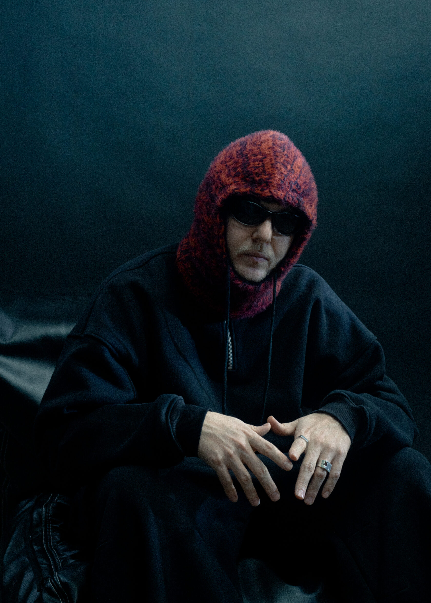

Biicla
Hyper House · Москва · 2019-н.в
Biicla — электронный музыкант, продюсер и диджей, работающий на стыке хауса, hyper house, bass music и поп-звучания. Виталик начал профессиональную карьеру как независимый продюсер. В 2020 году он переехал в США после подписания контракта с американским лейблом Good Luck Have Fun, выпустил несколько релизов и отправился в гастрольный тур по Северной Америке. Он стал единственным российским артистом, дважды выступившим на Lollapalooza — в Чикаго в 2022 году и Париже в 2023-м
В России Biicla известен многочисленными коллаборациями с артистами поп- и хип-хоп-сцены: FEDUK, ANIKV, Mirèle, DJ Stonik1917, SLAVA MARLOW и другими. Среди международных работ — ремикс для k-pop-группы NCT 127. Отдельное направление его творчества связано с проектом Лоис: во время пандемии Biicla начал экспериментировать с вокалом и выпустил под этим именем поп-материал, а позднее часть этих песен вошла в его собственную дискографию